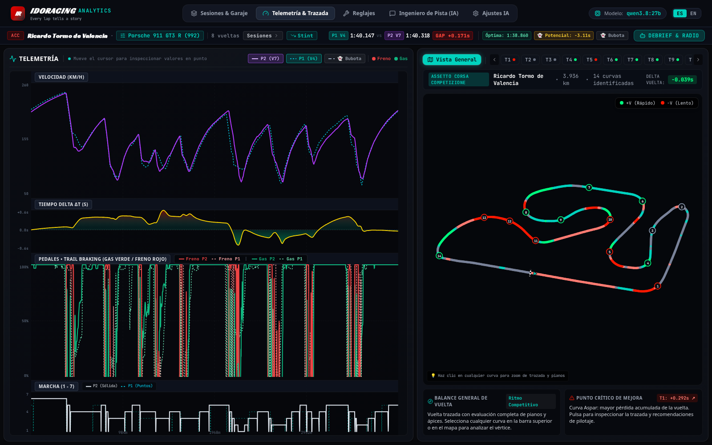
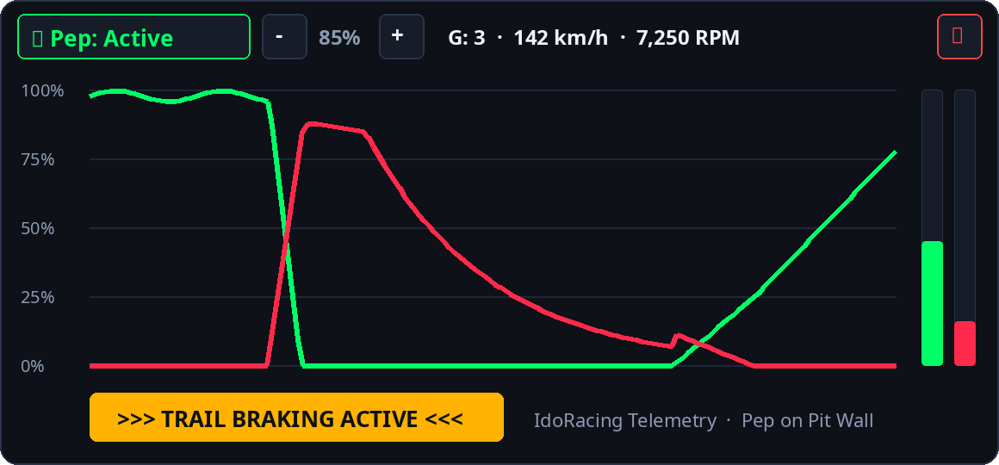

Graba telemetría a 50Hz sin penalizar los FPS de tu simulador. Compara dónde pierdes tiempo en cada fase de la curva (frenada, vértice o aceleración), entrena el trail braking con un HUD ligero y recibe avisos de referencia por radio.

Vista completa de canales: velocidad, delta frente a la vuelta de referencia, trazas de acelerador/freno y ángulo de volante.
Diseñado para simracers que quieren datos claros sin perder tiempo configurando proyectos complejos ni sobrecargar el ordenador mientras conducen.
En pista sólo corre el ejecutable compilado en Go (< 15MB RAM y 0% CPU). Sin Python, sin Node y sin navegadores en segundo plano mientras pilotas. Cero caídas de FPS o micro-stuttering.
Osciloscopio flotante y ligero que dibuja el acelerador y el freno en tiempo real. Te indica si estás soltando el freno de forma progresiva (entre el 60% y el 10%) para meter el morro en el vértice.
Comunica por puerto serie nativo (CDC-ACM) directamente con las bases Moza en Linux. Enciende los LEDs progresivos de RPM y destello de cambio sin necesidad de Pit House, SimHub ni Boxflat.
Cada curva se separa objetivamente en frenada/aproximación, paso por vértice y salida. Sabrás al milímetro si la pérdida de tiempo se debe a frenar antes, a subviraje en apoyo o a tardar en dar gas.
En pista emite clips cortos de radio a 250m de tus curvas más críticas. En el garaje, puede resumir los datos numéricos de tu stint con un modelo local (Ollama) o API remota si quieres feedback hablado.
Base de datos SQLite local en tu disco. Sin cuentas de usuario obligatorias, sin subir tus vueltas a servidores de terceros y 100% operativo sin conexión a internet.
En lugar de abrumarte con 30 líneas de gráficas indescifrables, IdoRacing desglosa cada curva en 4 fases objetivas y te dice en metros y km/h exactamente dónde estás perdiendo tiempo.
Mide si frenas antes o después de tu referencia en metros reales. Frenar 8 metros antes en recta cede casi dos décimas antes de girar el volante.
Detecta si liberas el freno suavemente (60% → 10%) mientras metes volante. Carga el eje delantero para rotar el coche hacia el vértice sin subviraje.
El punto más lento de la curva en km/h. Descubre si estás sobre-frenando el coche en la entrada o si entras pasado sacrificando la salida.
Pisar el acelerador a fondo mientras deshaces volante. Detecta si pisas de golpe activando el corte de TC que resta aceleración en la recta.
Un osciloscopio en tiempo real sobre tu pantalla para ver con el rabillo del ojo cómo descomprimes el pedal de freno en cada frenada. Compilado en Go nativo sin Electron ni caídas de FPS.

Grafica el recorrido de acelerador y freno con persistencia temporal. Evita el "acantilado" de soltar el freno de golpe a 0%.
Resalta el instante en que mantienes entre un 10% y un 60% de presión mientras metes grados de dirección hacia el ápice.
Indicador de volumen y tecla de mute rápido (M) para silenciar o reactivar los avisos de voz al vuelo.
Un único supervisor central (idoracing-launcher) gestiona en segundo plano el grabador a 50Hz, el HUD de pedales, las luces Moza y la voz de radio de Pep sin interferir con tu juego.
{
"subsystems": {
"pep_spotter": true,
"hud_overlay": true,
"moza_shift_lights": true,
"recorder": true
},
"hotkeys": {
"spotter_mute": "KeyM"
},
"audio": {
"volume": 85,
"language": "es"
}
}./ → data/ → ~/.config/idoracing/ con fallback seguro en memoria.
Anula cualquier subsistema temporalmente con flags sencillos sin editar el archivo:
-no-hud (sin overlay)-no-spotter (sin radio)-no-moza (sin LEDs)-status (diagnóstico)Clips de voz locales pregrabados en español e inglés. Te avisa a 250m de curva sobre deltas de frenada, velocidad mínima y presiones de neumáticos (26.5-27.0 psi en ACC).
Nos conectamos directamente a la memoria compartida o sockets UDP oficiales de cada simulador, sin inventar datos mecánicos inexistentes.
Física completa a 50Hz (fuerzas G, pedales, recorridos de suspensión, presiones dinámicas de neumáticos) y lectura directa de archivos de setup de garaje.
Conexión con el plugin de memoria compartida oficial. Resuelve el vehículo del jugador en parrillas multiclase WEC (Hypercar, LMP2, GT3) sin truncar buffers.
Grabación de física en pista viva, neumáticos y pedales. Soporte para setups propietarios en formato binario .carsetup.
Cálculo genérico de distancia por desplazamiento sin requerir trazados cerrados. Registra tramos lineales completos desde la salida hasta la meta.
Memoria compartida estándar de Kunos para circuito y lectura de reglajes mecánicos en formato .ini.
Lector binario para importar archivos generados por herramientas como MoTeC i2 Pro y visualizarlos en el interfaz web de IdoRacing sin conversiones previas.
Binarios precompilados de la última versión estable (v0.4.0) listos para usar sin necesidad de compilar código fuente.
Incluye el supervisor nativo idoracing-launcher, el osciloscopio HUD idoracing-hud y el grabador Proton.
Ejecutable silencioso de fondo sin ventanas molestas de terminal (idoracing-recorder.exe).
gamemoderun /ruta/a/idoracing/recorder/bin/idoracing-launcher %command%
💡 Flags de anulación opcionales: puedes desactivar partes concretas sin tocar el JSON (ej. -no-hud, -no-moza, -no-spotter, -no-recorder). Si no existe archivo de configuración, corre automáticamente con los valores por defecto sin dar error.
Respuestas transparentes sobre requisitos y limitaciones.
No. Mientras conduces solo está activo el binario nativo en Go (idoracing-launcher), que consume menos de 15MB de RAM y un porcentaje inapreciable de CPU. La interfaz web y el análisis en Python solo se ejecutan cuando tú decides abrirlos en el garaje.
No pretende ser un software de ingeniería profunda con 300 canales de telemetría como MoTeC i2 Pro. Su objetivo es darte respuesta en 10 segundos al terminar la tanda: decirte exactamente en qué curva pierdes tiempo, si frenaste tarde o con poco trail braking, sin tener que configurar hojas de cálculo ni proyectos complejos.
Sí. Todo el flujo de grabación, el osciloscopio HUD de pedales, las luces Moza y los avisos de voz de curvas funcionan 100% en local y sin conexión. Para la parte de debrief en garaje, puedes conectar un modelo local gratuito mediante Ollama (qwen2.5, llama3) sin enviar datos a servidores externos.
Cualquiera. El grabador lee directamente la física del simulador (freno, acelerador, dirección, marchas), por lo que funciona tanto con pedales de célula de carga como potenciómetros o mando. El módulo de luces de revoluciones por serie está adaptado específicamente a aros y bases Moza Racing en Linux.